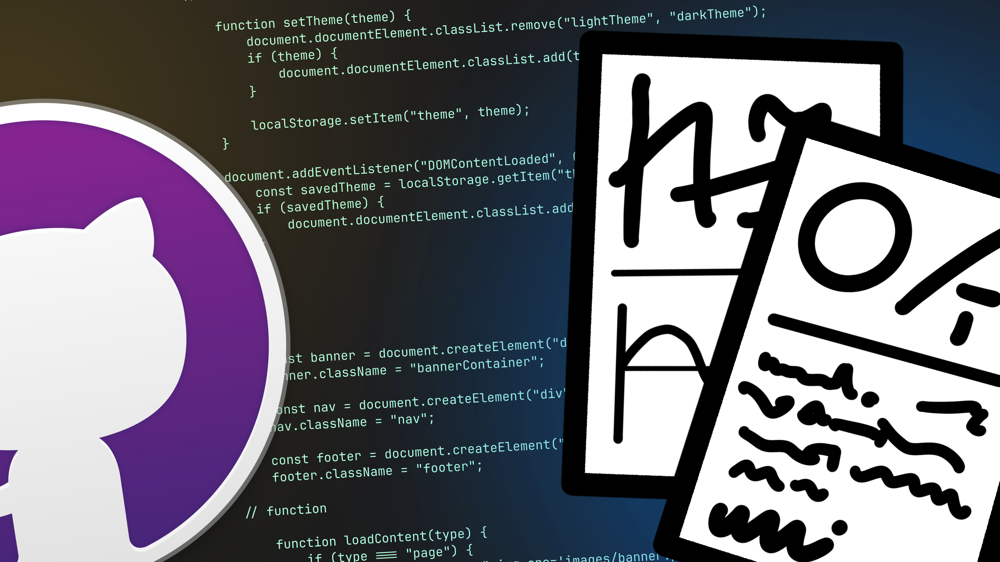

2-1-2025
check out my guide
so,
after looking at this website, you might think
I want one!
or
Just how did you do this?
and to answer those questions i am going to write a step-by-step guide that (should) show
how you can make a website, the way i did
apparently there's easier ways like neocities but i did this so
also you'll need github desktop and a code editor of choice
i use visual studio code which meets my needs entirely, so that's my reccomendation.
time for the detailed part
repositories are pretty easy to create
..says the one who thought importing just a html file to the cloudflare pages site would work :sob:
once you've made a github account you wanna go to github and press new
you will be taken to the Create a new repository page
choose the settings you want and stuffs, then click Create repository
click Set up in GitHub Desktop (you should have github desktop by now)
then you can clone it!
depends on what you wanna do: you could either learn it, or get someone else to do it for you. idk
once that's done you can commit which basically publishes it i think (not to the web!) we haven't got there yet..
go to pages.dev which will redirect you to cloudflare pages site
sign up and stuff and on the sidebar go to Compute (Workers) > Workers & Pages
then press Create
when you are on the Create an Application page go to the pages section and connect to git
then select your repository, configure the stuff you want, and then deploy
it'll take a while but eventually you should be able to type in whatever domain you chose and see
whatever you put in your cool website
anyway
hope this helps.. anyone
8-18-2025
I know this post is from a while ago, but I just want to emphasize that there are other ways to do this. You can use GitHub Pages, or use a Git terminal instead of Desktop. This isn't the only way to make website. - xleepree